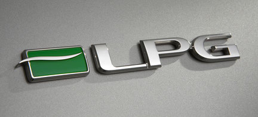
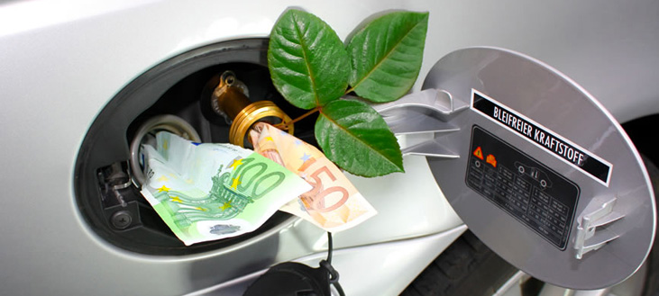

GPL(LPG)

Domande e risposte sulla conversione GPL della Ford Cougar
Il motore Duratec V6 della Ford Cougar è considerato da molti appassionati una delle unità più adatte alla conversione GPL grazie alla sua robustezza e alla distribuzione a catena. In questa guida raccogliamo le domande più frequenti sull'argomento.

Conviene ancora trasformare una Ford Cougar a GPL?
La convenienza dipende principalmente dai chilometri percorsi ogni anno. Il GPL continua a costare meno della benzina e può ridurre sensibilmente i costi di utilizzo per chi usa spesso l'auto o percorre lunghe distanze.
Il motore Duratec V6 è adatto al GPL?
Sì. Il Duratec V6 della Ford Cougar è generalmente considerato un motore robusto e ben predisposto alla conversione GPL. Molti esemplari hanno percorso elevati chilometraggi con impianti correttamente installati e mantenuti.
Si perdono prestazioni?
Con gli impianti moderni la differenza è generalmente contenuta. Nell'uso quotidiano la guida rimane molto simile a quella a benzina, con una lieve riduzione delle prestazioni massime.
Quanto costa un impianto GPL?
Il costo varia in base all'impianto scelto, all'installatore e alle condizioni del veicolo. In genere la spesa può variare da circa 1.000 a oltre 2.000 euro.
Quanto si può risparmiare?
Il GPL consente normalmente un costo chilometrico inferiore rispetto alla benzina. Il risparmio effettivo dipende dai prezzi dei carburanti e dal chilometraggio annuale.
Ogni quanto va sostituito il serbatoio GPL?
La normativa italiana prevede la sostituzione periodica del serbatoio GPL. Le tempistiche possono variare in base alla normativa vigente e alla tipologia dell'impianto.
Esistono incentivi per la conversione?
Periodicamente possono essere disponibili incentivi nazionali, regionali o locali per la conversione a GPL. È consigliabile verificare eventuali agevolazioni disponibili al momento dell'installazione.
Posso usare la Cougar sia a GPL che a benzina?
Sì. Gli impianti GPL mantengono normalmente la possibilità di utilizzare entrambi i carburanti.
Il GPL può danneggiare il motore?
Un impianto installato correttamente e sottoposto alla normale manutenzione non dovrebbe causare problemi particolari. È comunque importante affidarsi a professionisti qualificati e rispettare gli intervalli di manutenzione previsti.
GPL o benzina: quale scegliere oggi?
Per chi percorre pochi chilometri l'uso esclusivo della benzina può essere una scelta sensata. Per chi utilizza spesso l'auto, il GPL può rappresentare una soluzione interessante per ridurre i costi di gestione.
Approfondimento video
Guarda il video esempio su YouTube di un Duratec con conversione GPL
Le informazioni presenti in questa pagina hanno carattere puramente informativo e derivano da fonti pubblicamente disponibili e dall'esperienza della comunità degli appassionati. Prima di effettuare modifiche al veicolo è sempre consigliabile rivolgersi a un installatore qualificato e verificare la normativa vigente.